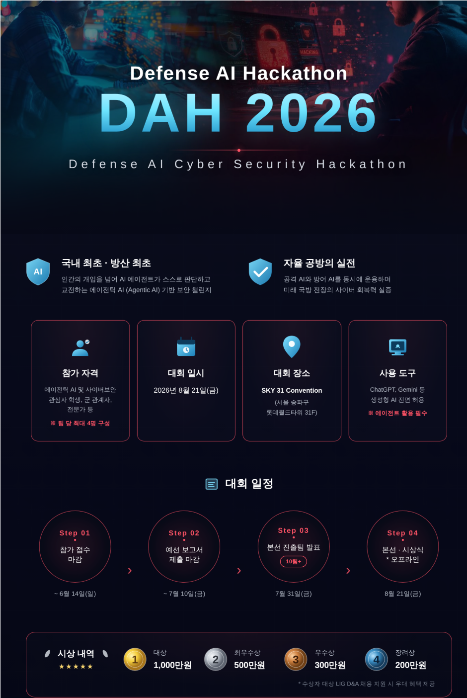

ROS2 · UAV/UGV Cyber Range · AI Red/Blue Teaming 기반 공격·방어 실습
본 교과목은 AI 기반 자율무인체계 환경에서 발생 가능한 사이버 공격 및 방어 시나리오를 실습 중심으로 학습하는 프로젝트 기반 교과목이다.
학생들은 ROS2 · PX4 · Gazebo 기반 UAV/UGV 시뮬레이션 환경에서 AI 기반 Red Team / Blue Team 공방 구조를 직접 설계하고 구현한다.
특히 GPS Spoofing, Telemetry Manipulation, Sensor Spoofing, AI 기반 이상탐지, 자율 복구(Autonomous Recovery), AI Agent 기반 의사결정 구조 등을 중심으로 학습하며, 실제 Defense AI Cyber Range 구조를 축소 구현하는 것을 목표로 한다.
또한 팀 기반 공격·방어 실습을 통해 실제 국방 AI · 자율무인체계 · 미래전장 환경에서 요구되는 AI 사이버보안 역량을 습득한다.

LIG 디펜스&에어로스페이스(LIG D&A)는 국내 최초 방산 분야 에이전틱 AI 공방 해커톤인 DAH(Defense AI Cyber Security Hackathon)를 개최하며, AI와 디지털 방산 기술이 결합되는 새로운 사이버 전장 환경을 제시하고 있다.
DAH는 단순 아이디어 경진대회가 아니라 AI Agent가 스스로 판단하고 실행하며 공격과 방어를 수행하는 공방전 형태의 기술 경연이다. 참가자는 실제 방위산업과 사이버보안 도메인에서 발생하는 고도화된 문제를 클라우드 기반 환경과 현장감 있는 데이터로 해결하게 된다.
본 실습 과정은 이러한 대회형 문제 해결 구조를 참고해, 자율무인체계 Cyber Range에서 Red Team과 Blue Team이 실시간으로 공격·탐지·대응 시나리오를 구현하는 역량을 기른다. 학생들은 대회 참가, 포트폴리오 구축, 방산 AI·사이버보안 분야 취업 및 연구 진입으로 이어질 수 있는 실전 경험을 확보하게 된다.
관련 뉴스 기사 클릭해서 보기| 구분 | 시간 | 운영 내용 |
|---|---|---|
| 이론 | 8H | UAV 구조, ROS2, AI 기반 공격·방어 구조, Cyber Range 및 Defense AI 개념 |
| 실습 | 32H | Gazebo 기반 UAV/UGV 실습, GPS Spoofing, AI 기반 이상탐지, Red/Blue Team 공방 실습 |
| 주차 | 구분 | 주제 | 세부 내용 |
|---|---|---|---|
| 1 | 이론 | Defense AI 및 Cyber Range 개요 | 미래전장 · MUM-T · AI 공방 구조 이해 |
| 2 | 이론 | UAV/UGV 시스템 구조 | ROS2 · PX4 · MAVLink · Telemetry 구조 |
| 3 | 실습 | ROS2 및 Gazebo 구축 | Ubuntu · ROS2 · Gazebo 환경 설정 |
| 4 | 실습 | UAV 시뮬레이션 실습 | PX4 SITL · UAV 제어 및 Telemetry 분석 |
| 5 | 실습 | ROS2 Topic 분석 | 센서 데이터 · Topic · Message 구조 분석 |
| 6 | 실습 | GPS Spoofing 공격 실습 | 위치 정보 변조 및 이상행동 유도 |
| 7 | 실습 | Sensor Manipulation | LiDAR/Camera 데이터 변조 실습 |
| 8 | 실습 | MAVLink 및 Telemetry 공격 | 명령 변조 · Fake Packet 실습 |
| 9 | 이론 | AI 기반 이상탐지 | Anomaly Detection · AI 기반 탐지 구조 |
| 10 | 실습 | Blue Team 방어 시스템 | 이상탐지 · Autonomous Recovery 구현 |
| 11 | 실습 | AI Agent 기반 의사결정 | AI 기반 공격/방어 Agent 설계 |
| 12 | 실습 | Red Team vs Blue Team 공방 | 팀 기반 실시간 공격·방어 실습 |
| 13 | 실습 | 통합 Cyber Range 구축 | 팀별 시나리오 및 공방 환경 구성 |
| 14 | 실습 | 최종 시스템 튜닝 | 안정화 · AI Agent 개선 |
| 15 | 실습 | 최종 프로젝트 발표 | AI 기반 자율무인체계 공방 시연 |
| 항목 | 비율 |
|---|---|
| 출석 및 참여도 | 20% |
| 공격/방어 시나리오 구현 | 25% |
| AI 기반 탐지 및 대응 구현 | 25% |
| 최종 공방 시연 및 발표 | 30% |